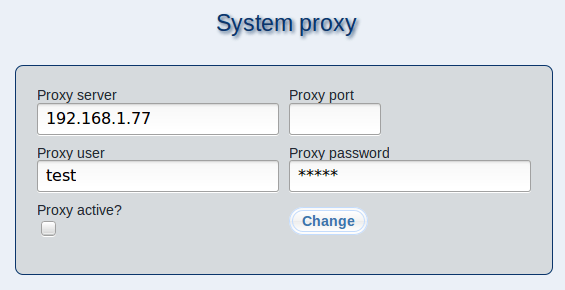

If your m23 server is connected to the internet using a proxy server, you can make the required settings in this dialog.
At ''Proxy server'' and ''Proxy port'', enter the IP address / the fully qualified domain name of the proxy and the port number to be used. If authentification is necessary, enter your credentials at ''Proxy user'' and ''Proxy password''.
To activate the proxy, check the checkbox at ''Proxy active?'', uncheck to deactivate.
Click on ''Change'' to save your changes.
root
2017-12-13